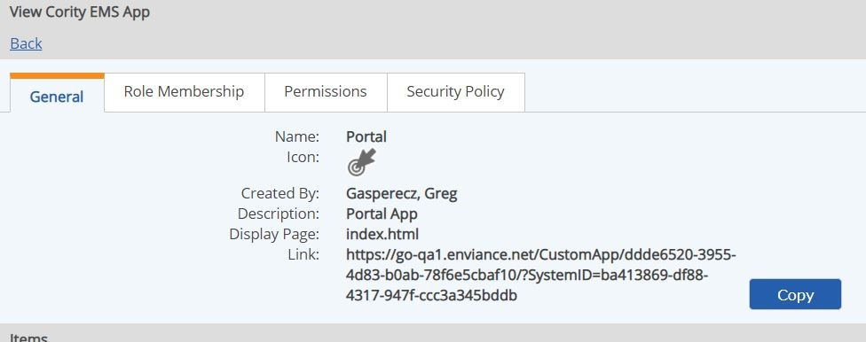

Links to Apps can be configured to use in System Notifications or External Links. System Notifications are emails sent to users from the system to notify them of workflow assignments or status. External links are links to the app from a company web page, a browser bookmark, or from another App.
The following file (download) will help you construct the correct link syntax for your use: AppLinkMaker Tool
For external links, you will need the SystemID. You can find the SystemID in App Manager (Setup > Cority EMS Apps). Select the app. The System ID is the last part of the "Link" value shown in the General tab. Use the Copy button to copy the link text, then select just the part after "SystemID=" to copy into the link format above, replacing [SystemID].

Do not use the full "Link" given on the General tab as it will not be supported in the future and may break.
Use EQL queries to obtain any other IDs (GUIDs) that you may need for your links, such as object IDs for object associations or workflow IDs.
Details of link formats and syntax are described below, for information or debugging. The AppLinkMaker tool will build these formats automatically for you.
For System Notifications used in email notifications, the {url::basePath} macro is used. The initial link syntax used in system emails is:
{url::basePath}AppName/
The {url::basePath} macro includes the "https:" prefix and the system id. This is the format you will use in a Notification Template.
For a link from an external page or to use for a bookmark, the explicit link format is required, as the macros will not work. The link format includes the system id and the app name ending with a slash, as follows:
https://go.enviance.com/goto/[SystemId]/AppName/
Replace [SystemId] with the System GUID (as shown above).
AppName is the name of the app on the General tab in App Manager. To find the App Name, select Setup > Cority EMS Apps from the main menu. Do not use the name of the app as it appears on the main menu, as this may be different than the actual app name.
The AppName is case-sensitive. In the case of custom Advanced Workflows (WAB) apps, the name of the app must end in "App". Spaces are not allowed (or must be url-encoded with %20).
To link to a specific page in the app, append a query and use "hash" for #, so the starting URL will be:
{url::basePath}AppName/?hash=/
or:
https://go.enviance.com/goto/[SystemId]/AppName/?hash=/
Sample link formats for various Apps are shown below. For links to specific App pages and items, see the documentation for each App.
| System Notification | External Link |
| {url::basePath}AuditApp/ | https://go.enviance.com/goto/1db78fad-388f-401d-8487-dec74fee265b/Audit%20App/ |
| {url::basePath}IncidentApp/ | https://go.enviance.com/goto/1db78fad-388f-401d-8487-dec74fee265b/IncidentApp/ |
| {url::basePath}InspectionApp/ | https://go.enviance.com/goto/1db78fad-388f-401d-8487-dec74fee265b/Inspection%20App/ |
| {url::basePath}MoCApp/ | https://go.enviance.com/goto/a172b98d-b491-4ad0-9019-409c82f32a0c/ManagementOfChangeApp/ |
| {url::basePath}WABApp/ | https://go.enviance.com/goto/1db78fad-388f-401d-8487-dec74fee265b/WABApp/ |
| {url::basePath}Portal/ | https://go.enviance.com/goto/1db78fad-388f-401d-8487-dec74fee265b/Portal/ |
| {url::basePath}TaskApp/ | https://go.enviance.com/goto/1db78fad-388f-401d-8487-dec74fee265b/Task%20Completion%20App/ |
For new custom Apps, the "go to" linking ability must be initially configured in the database by Cority Support.
Links may be created to the Add New Item page for an App, similar to the buttons that can be added to a Portal page for this function.
The format for these links builds on the standard app link format, with the addition of "?hash=/new". Thus:
https://go.enviance.com/goto/SystemID/AppName/?hash=/new
Optionally, for WAB Apps, you can add parameters to associate the new item with compliance objects. The object selector must be present on the form to create a new item. The object parameters that can be used are:
'd' for Division
'f' for Facility
'u' for Unit
'p' for POI
'r' for Requirements
The values must be object GUIDs. Separate multiple objects of the same type with a semicolon. Separate parameters with an ampersand (&). Example:
f=GUID&p=GUID&r=GUID1;GUID2)
Example:
https://go.enviance.com/goto/1db78fad-388f-401d-8487-dec74fee265b/IncidentApp/?hash=/new?d=80183144-75f2-4a8a-965f-5c92cb01f08f&f=6e63abd6-dc29-4d42-be6b-99e41dad7d9d;9e3c3c31-102a-416c-8775-d7c307613923&u=3680fd75-b447-4d05-a71c-c6012890bc56
If the Object Selector is not present on the first step of the workflow, any OS parameters in the URL will be ignored.
If the Object Selector is present on the first step of the workflow, but the OS parameter values passed into the URL do not exist in the scope of the OS, the App will display an error message in red on the form below the field "One or more values could not be found Please check this field and specify values as appropriate before proceeding."
The values specified in the URL will populate the OS in Advanced Workflows (WAB) even if that field is set to Read Only in Designer (but will still require the user to have appropriate System permissions).